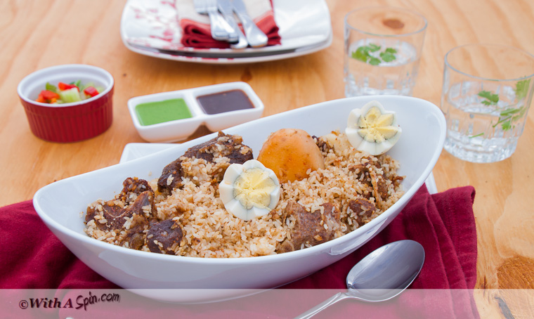

My Favorite Foods
- Chicken sandwich

A chicken sandwich is a sandwich that typically consists of boneless, skinless chicken breast or thigh served between slices of bread, on a bun, or on a roll. Variations on the "chicken sandwich" include the chicken burger, chicken on a bun, chickwich, hot chicken, or chicken salad sandwich.
In American English, a sandwich is any two pieces of bread with filling, including rolls, buns, or even chocolate sliders when it comes to ice-cream sandwiches; in British English (and also some other national English varieties, such as those of Canada, Ireland, Australia and New Zealand), the word sandwich is defined more narrowly, to require the pieces of bread to be sliced from a loaf, and a roll or bun with filling would not generally be called a sandwich. A bun with a cooked chicken breast as filling would generally be called a chicken sandwich in the U.S., but in the UK and other Commonwealth or former colonial countries, such a dish is not considered a sandwich, and would generally be called a chicken burger instead; most Americans would not consider such as dish to count as a burger, since Americans generally consider a burger to require a patty made from ground/minced meat.
- Kachchi Biryani

Kachchi biryani
Being welcoming and extremely hospitable is a hallmark of Bangladeshi culture. Visitors and friends are always welcome to drop in, sometimes even unannounced. Open doors, sheer hospitality, and friendly disposition are an integral part of the society. Add tons of mouthwatering food shared by the guests and host with chic-chat, laughter, love, and you have a complete picture of sociable Bangladeshis.
Naturally, I am very passionate about highlighting Bangladeshi cooking. When I started to think about my guest post on Chef Dennis’s blog, Kachchi biryani appeared to be the perfect dish to share with all of you, as I would have prepared if I were to welcome each of you in a large group to my home over dinner. Kachchi biryani is usually a featured dish for weddings and social gatherings and celebrations. Layers of meat, rice and potatoes are infused with warm and delectable blends of aromatic spices to prepare kachchi biryani. Whether it is a tender piece of mutton, potato, alubokhara(prune) or the rice itself, each spoonful is a mouthwatering surprise. I find this grand biryani to have lesser prep time because all the ingredients are put in layers and then in the oven instead of cooking the rice and meat separately and then combining (leaving me with less pots to clean afterwards also).
- Chicken sandwich
A chicken sandwich is a sandwich that typically consists of boneless, skinless chicken breast or thigh served between slices of bread, on a bun, or on a roll. Variations on the "chicken sandwich" include the chicken burger, chicken on a bun, chickwich, hot chicken, or chicken salad sandwich.
In American English, a sandwich is any two pieces of bread with filling, including rolls, buns, or even chocolate sliders when it comes to ice-cream sandwiches; in British English (and also some other national English varieties, such as those of Canada, Ireland, Australia and New Zealand), the word sandwich is defined more narrowly, to require the pieces of bread to be sliced from a loaf, and a roll or bun with filling would not generally be called a sandwich. A bun with a cooked chicken breast as filling would generally be called a chicken sandwich in the U.S., but in the UK and other Commonwealth or former colonial countries, such a dish is not considered a sandwich, and would generally be called a chicken burger instead; most Americans would not consider such as dish to count as a burger, since Americans generally consider a burger to require a patty made from ground/minced meat.